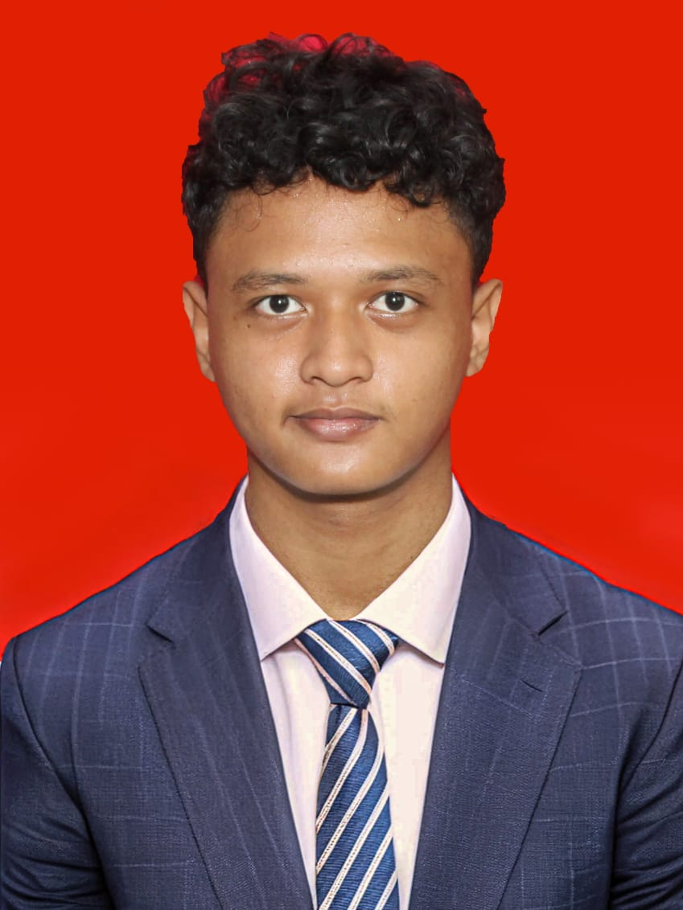
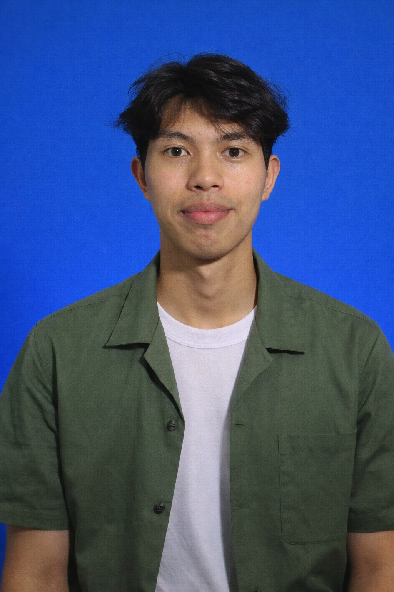
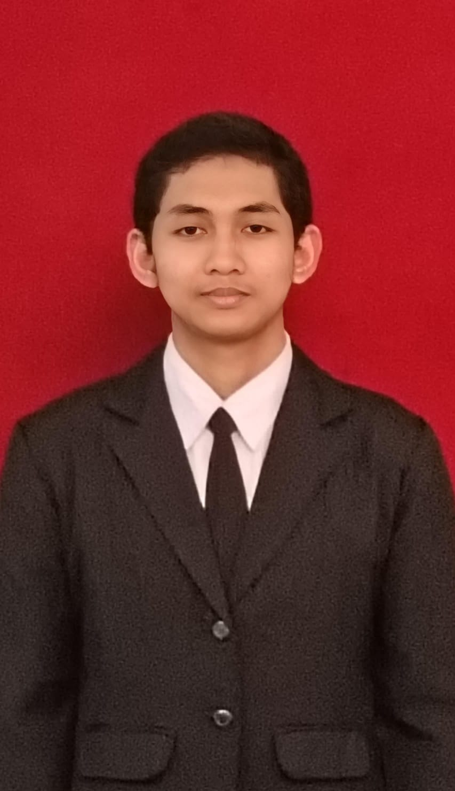

Anggota Tim Kelompok 9
Pembagian kerja kolaboratif dalam merancang dan menyusun prototipe deteksi dini anomali lumpur berbasis sensor Arduino. Mulai dari perakitan perangkat keras, pemrograman modul, hingga pembuatan model uji coba fisik.

Full-Stack Web Dev
Ahmad Rafli Ramadhan
NIM: 12225123

M.Ikhlassul Amri U.
NIM: 12225120

Brian Wilson
NIM: 12225126

Anwar Fadli A.A.B.S
NIM: 12225129

Fathan Akbar F.
NIM: 12225132
M.Fakhri Gunawan
NIM: 12225135
Fokus Pengujian Konsep
Setiap anggota kelompok berkontribusi dalam memastikan bahwa sirkuit alat uji ini benar-benar bisa mensimulasikan terjadinya perbedaan tekanan yang diakibatkan oleh gas. Kami berfokus pada keandalan logika sensor dalam mengenali transisi fase dari aman hingga bahaya.
Rakit Uji Skala Lab
Menggunakan material sederhana untuk membentuk U-Tube yang merepresentasikan sumur sebelum dihubungkan ke sensor elektronik.
Debugging & Evaluasi
Tahap penyempurnaan sensitivitas pembacaan Arduino agar alarm (buzzer) tidak menyala oleh kesalahan pembacaan (noise).